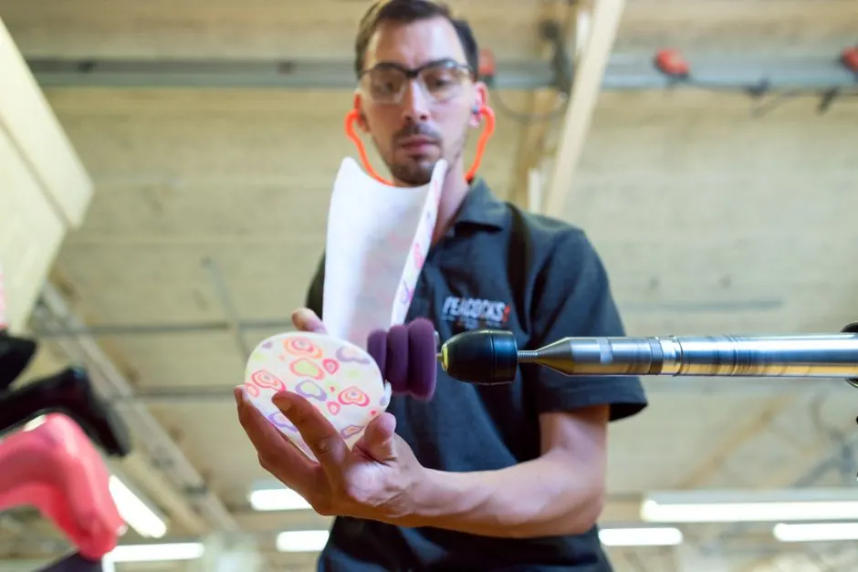
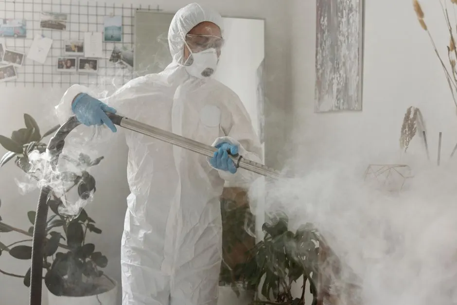

Your local North Spokane Mold Remediation team
Mold Remediation in North Spokane
Mold Remediation in North Spokane is crucial for ensuring a safe living environment. Our Mold Removal in North Spokane services address mold growth effectively, helping you maintain a healthy home. We understand the unique challenges faced by residents in North Spokane, including the area's climate and building structures.
24/7 dispatchNorth Spokane ZIP codesResidential & commercial
Local system knowledge
Trusted Mold Remediation in North Spokane
Mold Remediation in North Spokane is a vital service that protects homes and health. Spokane Mold Experts has been serving the North Spokane community for over 15 years, providing expert Mold Remediation services to neighborhoods like Five Mile Prairie and Shadle Park. The unique climate and building characteristics in North Spokane, such as older homes and high moisture levels, create a perfect environment for mold growth, making our services essential. Our team is well-versed in local regulations and the needs of residents, ensuring effective solutions tailored to each situation.
Explore North Spokane servicesSpokane Mold ExpertsNorth Spokane has a growing population and diverse housing styles, from historic homes to newer developments. This variety presents unique challenges for mold growth, particularly in areas prone to flooding. Our commitment to this community stems from our understanding of these challenges and our desire to provide effective, reliable Mold Remediation services.
Services available in North Spokane
Mold Remediation Services Available in North Spokane
Mold Remediation demand in North Spokane is on the rise due to the area's unique climate and building structures. Our expert services include 24/7 Mold Remediation in North Spokane, ensuring that residents have access to immediate assistance when mold issues arise.
01
Mold Inspection
Mold Inspection in North Spokane involves a thorough assessment of your property to identify mold presence and sources of moisture. Our team uses advanced tools like moisture meters and infrared cameras to ensure accurate results.
02Mold Testing
Mold Testing in North Spokane is essential for determining the type and concentration of mold in your home. We provide comprehensive testing services using mold test kits to ensure accurate analysis.
03Mold Remediation
Mold Remediation in North Spokane is conducted by our certified professionals who follow strict protocols to remove mold safely and effectively. We address the root causes of mold growth to prevent future issues.
04Water Damage Restoration
Water Damage Restoration in North Spokane is crucial for preventing mold growth after leaks or floods. Our team responds quickly to restore your property and mitigate mold risks.
05Basement Flood Cleanup
Basement Flood Cleanup in North Spokane requires prompt action to prevent mold growth. We specialize in thorough cleanup and restoration services tailored to the specific needs of basement environments.
More than a service list
How We Execute Mold Remediation in North Spokane
Our Mold Remediation in North Spokane is executed with precision and care, adhering to local codes and regulations. The region's diverse climate and building styles, including older homes with poor ventilation, require s
High humidity levels in summer
High humidity can exacerbate mold growth, making it essential to address moisture issues promptly. How we help: We implement dehumidification strategies and regular inspections to combat humidity-related mold growth.
Older homes with ventilation issues
Poor ventilation in older homes can lead to stagnant air and mold growth. How we help: Our team assesses ventilation systems and recommends improvements to enhance airflow and reduce mold risks.
Flooding in low-lying areas
Flood-prone areas in North Spokane can lead to significant mold problems if not addressed quickly. How we help: We provide emergency response services to mitigate damage and prevent mold after flooding events.
Early warning signs
Signs You Need Mold Remediation in North Spokane
A small visible symptom can point to a bigger pattern.
Visible mold growth on surfaces
Visible mold growth on surfaces
Musty odors in your home
Musty odors in your home
Increased allergy symptoms
Increased allergy symptoms
Water damage from leaks
Water damage from leaks
Clear starting points
Mold Remediation Pricing in North Spokane
Mold Remediation in North Spokane typically ranges from $1,000 to $3,000, depending on the severity of the mold issue and the size of the affected area. Factors such as the age of the building and the extent of water damage can increase costs. Our team provides free estimates to ensure transparency in pricing.
Extent of mold damage
The more extensive the mold damage, the higher the costs, as it requires more labor and materials for effective remediation.
Size of the affected area
Larger areas require more resources and time to remediate, impacting the overall cost.
Type of materials affected
Certain materials, like mold-resistant drywall, may require specific approaches, affecting pricing.
We know the route
Landmarks and Points of Interest in North Spokane
Navigating North Spokane is easy thanks to its well-known landmarks. We often use these locations as reference points for our service delivery.
NorthTown Mall
NorthTown Mall is a central hub, allowing us to serve nearby neighborhoods quickly and efficiently.
Riverside State Park
Riverside State Park is a popular area that sometimes experiences flooding, making our Mold Remediation services essential for local residents.
Whitworth University
With many older buildings, Whitworth University often requires our Mold Remediation expertise to maintain a safe environment for students.
Spokane Valley
Spokane Valley's proximity allows us to extend our services quickly to residents facing mold issues.
North Spokane service coverage
Is your ZIP on the route?
These are our most frequently served ZIP codes. Nearby areas may also qualify — call if you do not see yours.
Popular neighborhoods: Five Mile Prairie · Northpoint · Shadle Park · Hillyard
Check my address →
1234
Primary North Spokane response zoneSame-day response depends on current call volume, technician availability, and required equipment.
Reviews from North Spokane customers
Customer Reviews from North Spokane
★★★★★
“Spokane Mold Experts did a fantastic job removing mold from my basement. They were prompt and professional throughout the process.”
★★★★★
“I was impressed by their attention to detail during the Mold Inspection. They found issues I didn't even know existed!”
★★★★★
“Their Mold Remediation service was quick and effective. I highly recommend them to anyone in North Spokane.”
Outside North Spokane?
Nearby Cities We Serve
North Spokane Mold Remediation FAQ
FAQs About Mold Remediation in North Spokane
A real dispatcher is available if your question is not answered here.
Call 3609400726What is the cost of Mold Remediation in North Spokane?
The cost of Mold Remediation in North Spokane typically ranges from $1,000 to $3,000, depending on the severity of the mold issue.
How to choose a Mold Remediation company in North Spokane?
Look for licensed, insured contractors with experience in North Spokane and positive customer reviews.
What should I do if I find mold in my North Spokane home?
Contact a professional Mold Remediation service immediately to assess and address the situation safely.
How long does Mold Remediation take in North Spokane?
Mold Remediation can take anywhere from a few hours to several days, depending on the extent of the mold damage.
When should you call a Mold Remediation pro?
Call a Mold Remediation professional if you notice visible mold growth or experience health issues related to mold exposure.
North Spokane dispatch is ready
Need Mold Remediation Spokane WA Services?
Contact us for prompt and professional Mold Remediation services in Spokane. Your safety is our priority!

Talk with the local team
Request North Spokane service
We invite you to reach out for any mold-related concerns. Our team is available 24/7 to assist you with your needs.